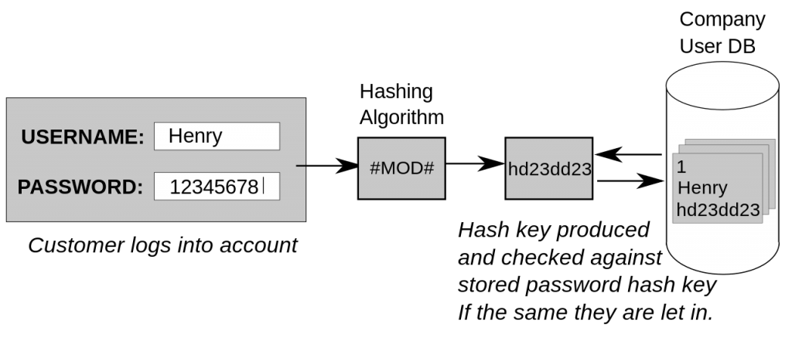

The most obvious use of cryptography, and the one that all of us use frequently, is encrypting communications between us and another system. This is most commonly used for communicating between a client program and a server. Examples are a web browser and web server, or email client and email server. When the internet was developed it was a small academic and government community, and misuse was rare. Most systems communicated in the clear (without encryption), so anyone who intercepted network traffic could capture communications and passwords. Modern switched networks make interception harder, but some cases – for example, public wifi – still allow it. To make the internet more secure, most communication protocols have adopted encryption. Many older protocols have been dropped in favour of newer, encrypted replacements.
Email is one area where encryption is not widely in use. When email moves from server to server, and from server to you, it is encrypted. On the mail server and on your system, however, an administrator can read it. There are options to implement “end-to-end” encryption for email (I use PGP) but email systems are complex and these options are complex. Truly secure messaging systems – where only the sender and receiver can read the message – are those where encryption has been built in from the start. Whatsapp is good; Signal is better.
We all store a large amount of data, and any data is valuable to at least the person who generated it. Every operating system uses encryption in some of the core components to keep passwords secret, conceal some parts of the system, and make sure that updates and patches are really from the maker of the system.
In the last blog post I briefly introduced cryptographic hashing, a one-way mapping of a string to a fixed-length value. One of the main uses of this is to store passwords. It is very risky to store passwords in an accessible way. If stored in plaintext on a system, anyone who has access to the system – legitimate or malicious – can read the password. Encryption is only a partial answer to storing passwords. If someone has access to the system storing the encrypted passwords, they will probably have access to the encryption key to decrypt the password. Hashing, on the other hand, produces a relatively useless value for the attacker. A system will take the password on login, hash it, and compare to the hashed value. At no point will the system – or an attacker – have access to the plaintext password.
